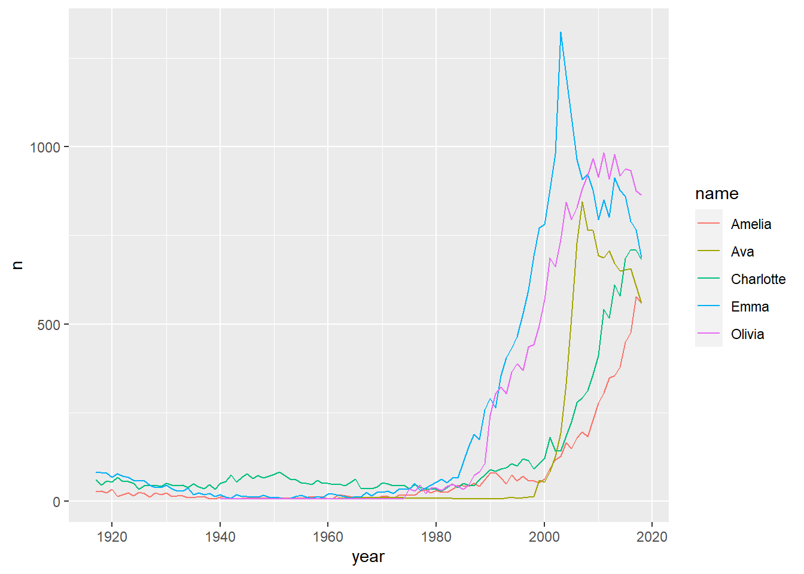

Mon deuxième package, onbabynames, vient tout juste d’arriver sur CRAN. Le package est en fait une base de données de tous les prénoms donnés aux enfants en Ontario entre 1917 et 2018. Les prénoms donnés moins de 5 fois ont été enlevés de la base de données pour conserver la confidentialité des données
Pour l’installer, rien de plus facile:
install.packages("onbabynames")Vous pouvez ensuite l’utiliser comme ceci:
library(onbabynames)Nous allons utiliser le package tidyverse pour visualiser les données:
# install.packages("tidyverse") si le package n'est pas encore installé
library(tidyverse)## -- Attaching packages --------------------------------------- tidyverse 1.3.1 --## v ggplot2 3.3.3 v purrr 0.3.4
## v tibble 3.1.1 v dplyr 1.0.5
## v tidyr 1.1.3 v stringr 1.4.0
## v readr 1.4.0 v forcats 0.5.1## -- Conflicts ------------------------------------------ tidyverse_conflicts() --
## x dplyr::filter() masks stats::filter()
## x dplyr::lag() masks stats::lag()Une base de données sous la forme d’un tibble sera maintenant accessible sous le noms de onbabynames.
glimpse(onbabynames)## Rows: 161,703
## Columns: 4
## $ year <int> 1913, 1913, 1914, 1914, 1914, 1915, 1915, 1915, 1915, 1915, 1916,~
## $ sex <chr> "F", "F", "F", "F", "F", "F", "F", "F", "F", "F", "F", "F", "F", ~
## $ name <chr> "Margaret", "Mary", "Gladys", "Margaret", "Mary", "Dorothy", "Mar~
## $ n <int> 6, 7, 6, 9, 9, 9, 13, 10, 7, 7, 6, 8, 10, 6, 14, 12, 12, 7, 89, 6~onbabynames## # A tibble: 161,703 x 4
## year sex name n
## <int> <chr> <chr> <int>
## 1 1913 F Margaret 6
## 2 1913 F Mary 7
## 3 1914 F Gladys 6
## 4 1914 F Margaret 9
## 5 1914 F Mary 9
## 6 1915 F Dorothy 9
## 7 1915 F Margaret 13
## 8 1915 F Marie 10
## 9 1915 F Mary 7
## 10 1915 F Ruth 7
## # ... with 161,693 more rowsonbabynames %>%
filter(year == 2018 & sex == "M") %>%
arrange(desc(n)) %>%
head(5)## # A tibble: 5 x 4
## year sex name n
## <int> <chr> <chr> <int>
## 1 2018 M Liam 795
## 2 2018 M Noah 787
## 3 2018 M Lucas 671
## 4 2018 M William 660
## 5 2018 M Benjamin 643onbabynames %>%
filter(year == 2018 & sex == "F") %>%
arrange(desc(n)) %>%
head(5)## # A tibble: 5 x 4
## year sex name n
## <int> <chr> <chr> <int>
## 1 2018 F Olivia 863
## 2 2018 F Emma 686
## 3 2018 F Charlotte 682
## 4 2018 F Amelia 560
## 5 2018 F Ava 559girls2018 <- onbabynames %>%
filter(year == 2018 & sex == "F") %>%
arrange(desc(n)) %>%
select(name) %>%
head(5)
onbabynames %>%
filter(name %in% girls2018$name) %>%
ggplot(aes(x = year, y = n, color = name)) +
geom_line()